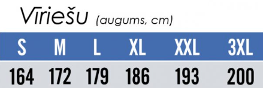
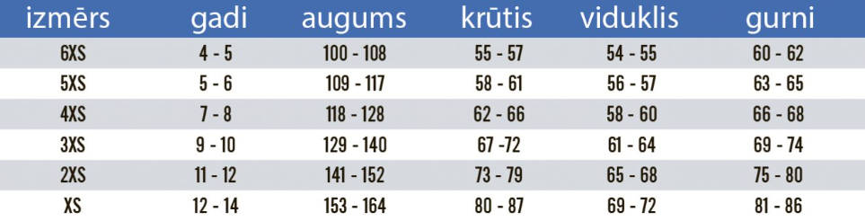

T-krekli pirmajām 150 ģimenēm
Šobrīd atlikušas 87 ģimeņu vietas ar T-krekliem.
Reģistrācija
Piesakiet savu ģimeni
Komandā piedalās viens tēvs un viens vai vairāki bērni. Visi komandas dalībnieki veic vienu izvēlēto distanci kopā.
Komandā pašlaik: 2 dalībnieki
1
Komandas informācija
Izvēlieties komandas nosaukumu un distanci.
2
Tēva informācija
Uz šo e-pastu nosūtīsim apstiprinājumu un pieteikuma labošanas kodu.
3
Bērni
Pievienojiet katru bērnu, kurš piedalīsies komandā.
T-kreklu izmēru tabulas
Vīriešu izmēri

Bērnu izmēri
